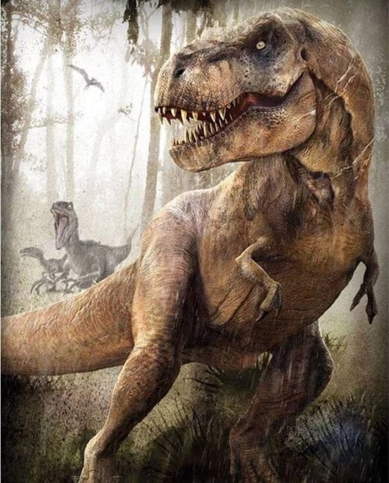
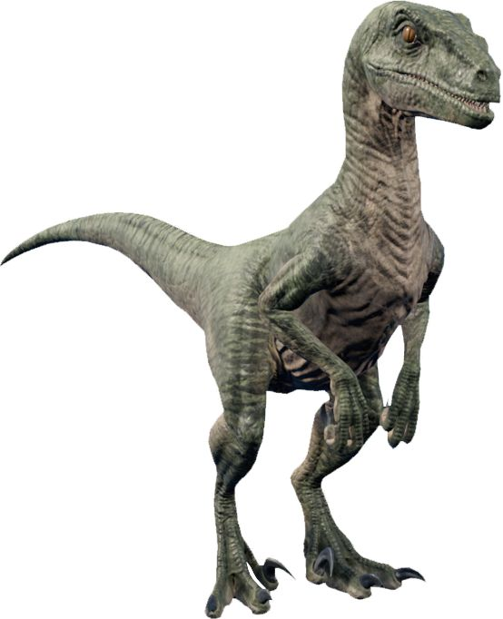
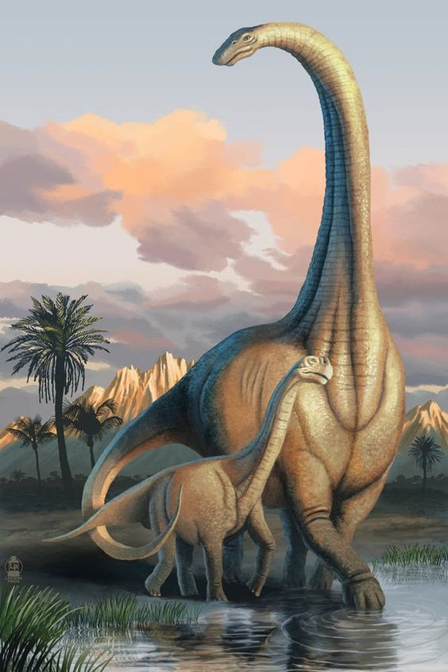

DINO HOMEPAGE
Introduction To Dinosaurs
Dinosaurs first appeared between 247 and 240 million years ago. They ruled the Earth for about 175 million years until an extinction event 65.5 million years ago wiped out all of them, expect for the avian dinosaurs. Scientists don't agree entirely on what happened, but the extinction likely was a double or triple whammy involving an asteroid impact, choking chemicals from erupting volcanoes, climate change and possibly other factors.
Tyrannosaurus Rex

Tyrannosaurus rex is possibly the most well known dinosaur due to its huge size, ferocious nature and regular appearances in popular media. Thanks to a number of well preserved fossils, the T-Rex has been studied in detail by paleontologists all around the world..
Velociraptor

Although it featured some nasty looking claws, the Velociraptor was actually a lot smaller than it was portrayed in the movie Jurassic Park, more the size of a turkey than a human. Read on to find out where their fossils have been found, which NBA team is named after them and more..
Apatosaurus (Brontosaurus)

Also known as the Brontosaurus, this giant dinosaur is one of the largest animals to have walked on Earth, reaching an amazing 23m (75ft) in length and 23 tons in weight..